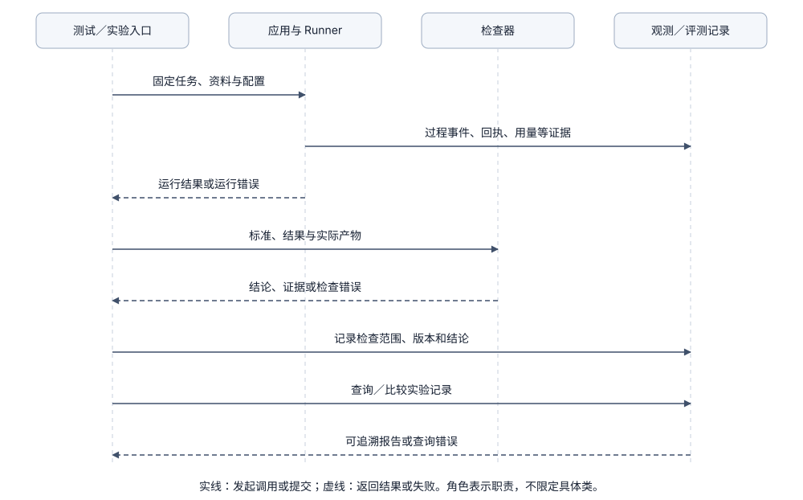

Quality：观测与评测
1. 问题起点：为什么“循环正常结束”不等于“任务完成合格”？
当模型读取文件并输出“报告已生成”时，系统面临两个不同维度的问题：
- 观测（Observability）回答“运行中实际发生了什么”：调用了哪几个工具、传入了什么参数、返回了什么回执、消耗了多少 Token、耗时多久。
- 评测（Evaluation）回答“任务结果是否真正达标”：生成的报告是否真的包含要求的字段、引用的数据是否与原文一致、是否违反了约束。
期望达到的效果：
- 状态严格区分：不能把“工具调用成功”“循环正常停止”和“业务结果合格”混为一个状态。
- 观测关联真实证据：每条观测记录都能关联到具体的 Run ID、步骤和工具真实回执。
- 评测可复现可对比：评测固定任务输入、工作区快照与检查标准，明确区分“确定性程序测试”与“真实模型表现评测”。
2. 模块协作：观测与评测如何接入系统？
- 观测只读消费执行记录：Runner 的过程事件、Model 返回的用量与错误、Tools 的真实回执经 State 记录层保存后，由观测模块读取或导出；观测模块绝不能为了补齐图表而重新执行工具。
- 评测由独立入口驱动检查：测试或实验入口固定任务与初始文件快照，调用应用完成运行后，将最终回复与真实产物交给检查器（Checker），输出结论、覆盖范围与证据。
- 反馈修复需显式授权：若要将检查失败反馈交回 Runner 自动重试修复，必须另行设置重试预算与权限；观测或检查器自身不自动拥有重启执行的权力。

按需阅读：后续观测与评测方案
3. 观测方案对比
观测方案主要解决“运行过程如何关联、存储与查看”（不能替代业务结果评测）：
A. 结构化本地事件
- 做法：用本地 JSONL 或 SQLite 按顺序记录关键步骤、固定 ID 和必要元数据。
- 适用场景：单机开发调试与回看执行过程，零外部依赖。
- 注意事项：用于恢复的执行记录不能被采样丢弃，需与允许采样的普通观测日志区分开（详见 State）。
B. 分布式 Trace、Span 与指标（OpenTelemetry）
- 做法：用 Trace 串联整次请求，用 Span 记录模型调用、工具执行和子任务的父子关系、起止时间与状态（参考 OpenTelemetry Trace 规范）。
- 适用场景：跨服务、多 Worker 定位延迟瓶颈与错误链路。
- 注意事项：Token 用量、调用次数适合作为指标（Metrics），但绝不能把完整文件内容或密钥放进指标标签（会导致敏感信息泄露与高基数标签爆炸）。
C. 专用 Agent 观测与评测平台
- 做法：通过适配器导出调用树、Prompt 版本与评测结果，复用外部平台的可视化界面与数据集管理。
- 适用场景：团队协作诊断与多版本横向对比。
- 注意事项：需评估数据外发合规性与平台耦合成本；且平台显示调用链为绿色（无异常），不代表业务结果通过了质量验收。
| 方案 | 适用范围 | 主要收益 | 主要代价 |
|---|---|---|---|
| 本地结构化事件 | 单机学习、回看执行过程 | 直观、零外部依赖、易核对 | 跨进程聚合与可视化能力有限 |
| OpenTelemetry | 跨服务与独立 Worker | 标准链路追踪与指标聚合 | 上下文传播、采样与语义字段维护 |
| 专用 Agent 平台 | 团队诊断与评测数据集管理 | 免去自建可视化界面 | 数据托管合规性与供应商耦合 |
4. 开源与工业界观测实践
- OpenAI Agents SDK（官方文档）：观测说明围绕模型调用、工具执行、Handoff 和 Guardrail 建立完整调用树，而非仅保存最终 Prompt 与回答。
- AgentScope Java（官方文档）：Session Log 将持久化执行记录、用户可读历史与实时事件订阅关联，支持页面刷新后按 Run ID 补读。
- OpenTelemetry GenAI 语义约定：原 GenAI 页面已迁移至独立语义约定仓库，接入时需固定语义版本。
5. 测试与评测的三层体系
- 第一层：本地组件单元测试：直接传入参数、临时文件与本地存储，确定性检查参数校验、权限拦截、上下文裁剪与会话读写。
- 第二层：本地协议契约测试：让真实模型 SDK 连接本机固定响应的 HTTP 测试服务，稳定验证工具调用关联、拒答、截断与网络错误处理（不消耗外部 Token，也不代表远端模型智力表现）。
- 第三层：端到端真实任务评测：固定任务集、初始工作区快照、真实模型与结果检查器，统计多次运行的通过率、工具调用路径、Token 用量与耗时，避免把单次偶然跑通当作长期可靠性。
6. 本项目当前实现与未实现范围
- 已实现（截至阶段 3）：
- 未实现（留待阶段 5 及后续扩展）：OpenTelemetry Trace 导出、指标聚合、外部观测平台接入、独立产物检查器（Checker）、批量真实任务评测集以及基于评测反馈的自动重试修复。